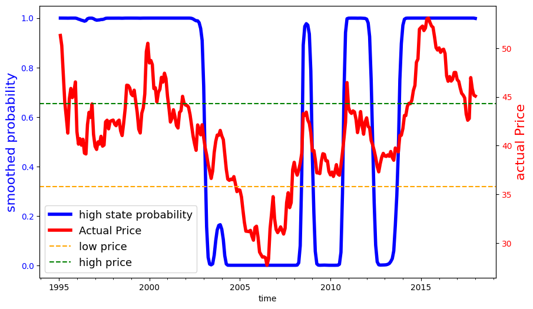
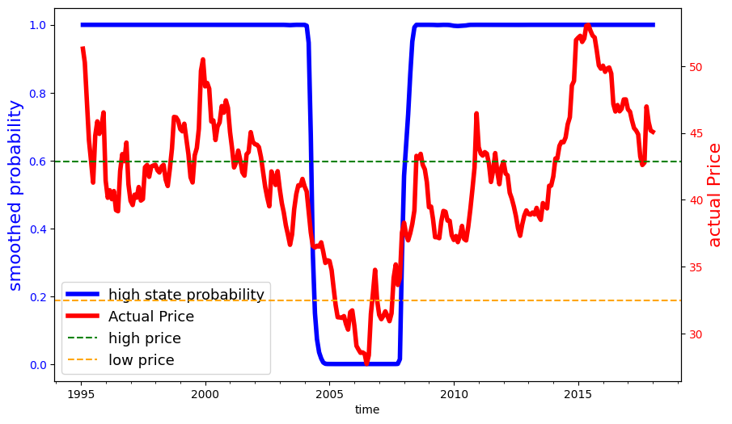

4. Solution with price stochasticity#
We then consider model with price stochasticity. To account for stochastic prices in a tractable way, we construct an approximate Markov chain with two states \(P^a_\ell < P^a_h\) and transitions that match the empirical transitions from monthly data. We implement ``Modified Predictive Control’’ (MPC) methods for solving our planner’s problem.
4.1. Model setup#
Our MPC approximation is implemented as follows: Starting from the current period, denoted as date zero, we break the future into two segments: a) an uncertainty horizon of, say, \(h\) time periods and b) the remaining \(T- h\) time periods beyond this uncertainty horizon for which we abstract from uncertainty. Although the cattle price distribution follows a Markov chain, to simplify our computations, we set the prices in periods \(h+1, \dots T\) equal to the value that prevails at \(h.\) Prior to date \(h +1,\) we confront randomness in this problem by imposing appropriate ``measurability’’ restrictions on the controls as functions of potentially realized states.
We then apply the interior point method to find the optimal trajectory at date zero given \(P^a_0.\) We keep the optimal date \(t=1\) states computed at time \(t=0\) and repeat. That is, we consider the problem starting at \(t=1\) with the new state vector and divide the future into two segments: an uncertainty segment of length \(h\) and a remaining period of \(T-h - 1.\) This step will determine an optimal state at period 2. We continue this procedure to produce the optimal state at periods 3, 4, …, T supported by the corresponding optimal controls.
Mathematically, label the potential state realizations as \(j=1,2,...,n\). Let \(\pi_{j{{\tilde j} }}\) be the probability of going to state \({\tilde j}\) given the current state \(j\). Over \(h\) time periods, there are \(N= n^h\) potential realizations, let
where \(k_\ell \in \{ 1,2,..., n\}\) for \(\ell = 1,2,..., h\). For each \(k\) let:
for \(1 \le \ell \le h-1\).
At time \(t+h\) form \(N\) value functions, \({\mathcal C}_{t,h}(k)\) one for each of the \(N\) possible state vector realizations over horizon \(h\). These are constructed as the deterministic discounted sums scaled by \(1 - \exp(-\delta)\). That is,
Let \(U_{t,h-1}(k^{-1})\) denote the date \(t+h-1\) contribution to the objective at uncertainty date \(t + h - 1\). Compute
Note that there are \(n^{h-1}\) value functions. More generally, compute
Repeat this backward induction computation going from \(\tau -1\) to \(\tau -2\) all the way back to obtain \({\mathcal C}_{t,0}\).
In summary, we start from period \(t=t_0\), maximizes the \({\mathcal C}_{t,0}\), keep the optimal states at \(t_0+1\) and use them as initial values solving again the optimization problem starting at \(t_0+1\), maximizes the \({\mathcal C}_{t_0+1,0}\).
4.2. MPC robustness#
We extend the MPC method to include robustness to the misspecification of the transition distribution for the agricultural price. Anderson, Hansen and Sargent (2003) suggest a recursive way to include such an adjustment using an intertemporal notion of relative entropy for continuoustime jump processes. Conditioned on each state, there is a jump intensity for moving to a different price state that could be misspecified. We then make the robustness adjustment to the discounted conditional expected utility applied to the discrete-time approximation. More specifically, we start with a hypothetical decision rule contingent on the different state realizations over the uncertainty horizon. Very similar to the case with parameter ambiguity, there is an exponential tilting formula for adjusting the transition probabilities that we exploit. We distinguish the penalization parameter for the potential Markov chain misspecification with the notation \(\widehat \xi\) in contrast to the parameter governing productivity ambiguity concerns, which we denoted by \(\xi\).
We then make a robustness adjustment to the objective over the uncertainty horizon using this exponential tilting formula period-by-period working backwards and discounting. The outcome of this computation gives the objective that we maximize. As with ambiguity aversion, we iterate between maximization and minimization. We use the minimizing initial period transition distribution for the uncertainty horizon step of the computation outcomes to form uncertainty-adjusted probabilities for purposes of valuation.
That is, we similarly compute \({\mathcal C}_{t,h}(k)\) as before. Then compute
and generally, compute
Then similarly repeat backward to get \({\mathcal C}_{t,0}\).
4.3. MPC implementation#
4.3.1. Agricultural price estimation#
First of all, we fit a two-state Markov process as a hidden-state Markov chain with with Gaussian noise. We use a data series on monthly deflated cattle prices (reference date 01/2017), from 1995, the year in which the Real Plan stabilized the Brazilian currency, until 2017. We estimated two versions of this model using the \(\bf{hmmlearn}\) package in python. This package provides a collection of software tools for analyzing Hidden State Markov Models. In estimation, the hidden states were initialized in the implied stationary distribution of the transition probabilities through an iterative process. The implied calibration we used for results reported in the main body of the paper allowed for the normally distributed variances to be different depending on the state. We also considered a specification in which the variances are the same.
import numpy as np
import pandas as pd
import os
from hmmlearn import hmm
from scipy.linalg import logm, expm
import warnings
import contextlib
import sys
import os
import matplotlib.pyplot as plt
import numpy as np
import matplotlib.dates as mdates
@contextlib.contextmanager
def suppress_output():
with open(os.devnull, 'w') as devnull:
old_stdout = sys.stdout
old_stderr = sys.stderr
sys.stdout = devnull
sys.stderr = devnull
try:
yield
finally:
sys.stdout = old_stdout
sys.stderr = old_stderr
def plot_hmm_results(mu,predict, price, var):
if mu[0]>mu[1]:
predict = predict[:,0]
else:
predict = predict[:,1]
predict = predict
price = price
start_date = '1995-01'
dates = pd.date_range(start=start_date, periods=276, freq='M')
df = pd.DataFrame({
'date': dates,
'predict': predict
})
# Save to CSV
df.to_csv(f'output/tables/smooth_prob_{var}.csv', index=False)
fig, ax1 = plt.subplots(figsize=(10, 6))
# Plot the first dataset with the left y-axis (ax1)
ax1.plot(dates, predict, linewidth=4, label='high state probability', color='b')
ax1.set_xlabel('time')
ax1.set_ylabel('smoothed probability', color='b',fontsize=16)
ax1.tick_params(axis='y', labelcolor='b')
ax1.xaxis.set_major_locator(mdates.YearLocator(base=5)) # Major ticks every 5 years
ax1.xaxis.set_minor_locator(mdates.YearLocator(base=1)) # Minor ticks every year
ax1.xaxis.set_major_formatter(mdates.DateFormatter('%Y'))
# Create a second y-axis on the right
ax2 = ax1.twinx()
# Plot the second dataset with the right y-axis (ax2)
ax2.plot(dates, price, linewidth=4, label='Actual Price', color='r')
ax2.set_ylabel('actual Price', color='r',fontsize=16)
ax2.tick_params(axis='y', labelcolor='r')
if mu[0]>mu[1]:
ax2.axhline(y=mu[0], color='g', linestyle='--', label='high price')
ax2.axhline(y=mu[1], color='orange', linestyle='--', label='low price')
else:
ax2.axhline(y=mu[0], color='orange', linestyle='--', label='low price')
ax2.axhline(y=mu[1], color='g', linestyle='--', label='high price')
# Add legends
lines1, labels1 = ax1.get_legend_handles_labels()
lines2, labels2 = ax2.get_legend_handles_labels()
lines = lines1 + lines2
labels = labels1 + labels2
ax1.legend(lines, labels, loc='lower left',fontsize=13)
plt.xticks(rotation=45)
plt.savefig(f'output/figures/smooth_prob_{var}.png', format='png', bbox_inches='tight')
plt.close()
def est(s_low=0.5,s_high=0.5,var='uncon'):
warnings.filterwarnings("ignore", message="KMeans is known to have a memory leak on Windows with MKL, when there are less chunks than available threads. You can avoid it by setting the environment variable OMP_NUM_THREADS=2.")
# need to input initial state prob s_low and s_high
data_folder = os.getcwd()+"/data/calibration/"
# read data
df = pd.read_csv(data_folder+"seriesPriceCattle_prepared.csv")
price = df['price_real_mon_cattle'].values.astype(float)
logprice=np.log(price)
# estimating the model
Q=logprice.reshape(logprice.shape[0],1)
np.random.seed(12345)
best_score = best_model = None
n_fits = 500
for idx in range(n_fits):
if var=='uncon':
model = hmm.GaussianHMM(n_components=2,random_state=idx,init_params='tmc',params='stmc')
else:
model = hmm.GaussianHMM(n_components=2,random_state=idx,init_params='tmc',params='stmc',covariance_type='tied')
model.startprob_= np.array([s_low, s_high])
with suppress_output():
model.fit(Q)
score = model.score(Q)
if best_score is None or score > best_score:
best_model = model
best_score = score
aic = best_model.aic(Q)
bic = best_model.bic(Q)
mus = np.exp(np.ravel(best_model.means_))
sigmas = np.ravel(np.sqrt([np.diag(c) for c in best_model.covars_]))
P = np.round(best_model.transmat_,3)
sorted_indices = np.argsort(mus)
mus_sorted = mus[sorted_indices]
sigmas_sorted = sigmas[sorted_indices]
P_sorted = P[sorted_indices][:, sorted_indices]
predict=best_model.predict_proba(Q)
if var=='uncon':
ll = (best_model.aic(Q)-12)/(-2)
else:
ll = (best_model.aic(Q)-10)/(-2)
plot_hmm_results(mus,predict, price, var)
return(aic,ll,bic,mus_sorted,sigmas_sorted,P_sorted)
def stationary(transition_matrix,mus):
eigenvals, eigenvects = np.linalg.eig(transition_matrix.T)
close_to_1_idx = np.isclose(eigenvals,1)
target_eigenvect = eigenvects[:,close_to_1_idx]
target_eigenvect = target_eigenvect[:,0]
stationary_distrib = target_eigenvect / sum(target_eigenvect)
stationary_price=mus[0]*stationary_distrib[0]+mus[1]*stationary_distrib[1]
return(stationary_distrib,stationary_price)
def annual_transition(transition_matrix):
dτ = 1/12 # time step
P = transition_matrix #probability transition matrix
M = logm(P)/dτ # instantenous generator
P = expm(M) # Updated Probability transition matrix
return P
def iteration_est(initial_prob, num_iterations=5,var='uncon'):
for i in range(num_iterations):
if i == 0:
s_low, s_high = initial_prob[0], initial_prob[1]
else:
s_low, s_high = sta_dist[0], sta_dist[1]
aic, ll, bic, mus, sigmas, P = est(s_low, s_high, var)
sta_dist, sta_price = stationary(P, mus)
annual_P=annual_transition(P)
return aic,ll,bic,mus,sigmas,P,sta_dist,sta_price,annual_P
result_uncon = iteration_est([0.5, 0.5], num_iterations=5, var='uncon')
result_con = iteration_est([0.5, 0.5], num_iterations=5, var='con')
print("distinct variances", result_uncon)
print("common variances", result_con)
Distinct Variances |
Common Variance |
||||
|---|---|---|---|---|---|
Low Price |
High Price |
Low Price |
High Price |
||
Mean |
35.76 |
44.32 |
32.49 |
42.85 |
|
Std. Dev. |
0.106 |
0.075 |
0.089 |
0.089 |
From / To |
Low (Distinct) |
High (Distinct) |
Low (Common) |
High (Common) |
|
|---|---|---|---|---|---|
Low |
0.707 |
0.293 |
0.762 |
0.238 |
|
High |
0.174 |
0.826 |
0.041 |
0.959 |
Plot the smoothed probabilities for both models:
def plot_hmm_results(mu,predict, price, var):
if mu[0]>mu[1]:
predict = predict[:,0]
else:
predict = predict[:,1]
predict = predict
price = price
start_date = '1995-01'
dates = pd.date_range(start=start_date, periods=276, freq='M')
df = pd.DataFrame({
'date': dates,
'predict': predict
})
# Save to CSV
df.to_csv(f'output/tables/smooth_prob_{var}.csv', index=False)
fig, ax1 = plt.subplots(figsize=(10, 6))
# Plot the first dataset with the left y-axis (ax1)
ax1.plot(dates, predict, linewidth=4, label='high state probability', color='b')
ax1.set_xlabel('time')
ax1.set_ylabel('smoothed probability', color='b',fontsize=16)
ax1.tick_params(axis='y', labelcolor='b')
ax1.xaxis.set_major_locator(mdates.YearLocator(base=5)) # Major ticks every 5 years
ax1.xaxis.set_minor_locator(mdates.YearLocator(base=1)) # Minor ticks every year
ax1.xaxis.set_major_formatter(mdates.DateFormatter('%Y'))
# Create a second y-axis on the right
ax2 = ax1.twinx()
# Plot the second dataset with the right y-axis (ax2)
ax2.plot(dates, price, linewidth=4, label='Actual Price', color='r')
ax2.set_ylabel('actual Price', color='r',fontsize=16)
ax2.tick_params(axis='y', labelcolor='r')
if mu[0]>mu[1]:
ax2.axhline(y=mu[0], color='g', linestyle='--', label='high price')
ax2.axhline(y=mu[1], color='orange', linestyle='--', label='low price')
else:
ax2.axhline(y=mu[0], color='orange', linestyle='--', label='low price')
ax2.axhline(y=mu[1], color='g', linestyle='--', label='high price')
# Add legends
lines1, labels1 = ax1.get_legend_handles_labels()
lines2, labels2 = ax2.get_legend_handles_labels()
lines = lines1 + lines2
labels = labels1 + labels2
ax1.legend(lines, labels, loc='lower left',fontsize=13)
plt.xticks(rotation=45)
plt.savefig(f'output/figures/smooth_prob_{var}.png', format='png', bbox_inches='tight')
plt.close()
{kind=link}

Fig. 4.1 Fig: Smoothed probabilities for distinct variances#
{kind=link}

Fig. 4.2 Fig: Smoothed probabilities for common variances#
4.3.2. Optimization#
Below is the function for MPC robustness optimization. Similarly we compute the implied shadow price first and then compute the social valuations using the implied uncertainty-adjusted probability measures. To construct the business-as-usual price for emissions when the agricultural prices are stochastic, we used the smoothed probabilities reported above to assign the discrete states in our computations. While we used a probability .5 threshold for this assignment, many of the probabilities are actually close to zero or one.
import math
import time
from dataclasses import dataclass
import pandas as pd
import numpy as np
import pyomo.environ as pyo
import os
from pyomo.environ import (
ConcreteModel,
Constraint,
NonNegativeReals,
Objective,
Param,
RangeSet,
Var,
maximize,
Set,
)
from pyomo.opt import SolverFactory
from ..services.file_service import get_path
@dataclass
class PlannerSolution:
Z: np.ndarray
X: np.ndarray
U: np.ndarray
V: np.ndarray
def mpc_solve_planner_problem(
x0,
z0,
zbar,
gamma,
theta,
dt=1,
time_horizon=200,
price_emissions=20.76,
price_cattle=44.75,
price_low = 35.71,
price_high = 44.25,
alpha=0.045007414,
delta=0.02,
kappa=2.094215255,
zeta_u=1.66e-4 * 1e9,
zeta_v=1.00e-4 * 1e9,
solver="gurobi",
sto_horizon=8,
xi=10000,
prob_ll=0.706,
prob_hh=0.829,
id=1,
max_iter=20000,
tol=0.005,
final_sample_size=5_000,
forest_area_2017=None,
weight=0.5,
low_smart_guess=None,
high_smart_guess=None,
mode=None,
type=None,
):
output_base_path = os.path.join(
str(get_path("output")),
"sampling",
solver,
f"78sites",
f"mpc",
f"xi_{xi}",
f"id_{id}",
f"pe_{price_emissions}",
)
if not os.path.exists(output_base_path):
os.makedirs(output_base_path)
model = ConcreteModel()
# Indexing sets for time and sites
model.T = RangeSet(time_horizon + 1)
model.S = RangeSet(gamma.size)
model.J = RangeSet(sto_horizon)
# Parameters
model.x0 = Param(model.S, initialize=_np_to_dict(x0))
model.z0 = Param(model.S, initialize=_np_to_dict(z0))
model.zbar = Param(model.S, initialize=_np_to_dict(zbar))
model.gamma = Param(model.S, initialize=_np_to_dict(gamma))
model.theta = Param(model.S, initialize=_np_to_dict(theta))
model.delta = Param(initialize=delta)
model.pe = Param(initialize=price_emissions)
model.pa_current = Param(initialize=1, mutable=True)
def initialize_pa(model, t, j):
if t == 1:
return price_low if model.pa_current.value == 1 else price_high
elif t == 2:
if j in [1, 2, 3, 4]:
return price_low
else:
return price_high
elif t == 3:
if j in [1, 2] or j in [5, 6]:
return price_low
else:
return price_high
elif t == 4:
if j in [1, 3, 5, 7]:
return price_low
else:
return price_high
else:
if j in [1, 3, 5, 7]:
return price_low
else:
return price_high
model.pa = Param(model.T, model.J, mutable=True, initialize=initialize_pa)
# model.prob = Param(model.J, initialize=0, mutable=True)
dep = [
(1, 2, 1), (1, 3, 1), (1, 4, 1), (1, 5, 1), (1, 6, 1), (1, 7, 1), (1, 8, 1),
(2, 2, 1), (2, 3, 1), (2, 4, 1), (2, 6, 2), (2, 7, 2), (2, 8, 2),
(3, 2, 1), (3, 4, 3), (3, 6, 5), (3, 8, 7),
]
model.dep = Set(initialize=dep, dimen=3)
model.zeta_u = Param(initialize=zeta_u)
model.zeta_v = Param(initialize=zeta_v)
model.alpha = Param(initialize=alpha)
model.kappa = Param(initialize=kappa)
model.xi = Param(initialize=xi)
model.dt = Param(initialize=dt)
model.p_C0_1 = Param(initialize=prob_ll, mutable=True)
model.p_C1_1 = Param(initialize=prob_ll, mutable=True)
model.p_C1_2 = Param(initialize=prob_ll, mutable=True)
model.p_C2_1 = Param(initialize=prob_ll, mutable=True)
model.p_C2_2 = Param(initialize=prob_ll, mutable=True)
model.p_C2_3 = Param(initialize=prob_ll, mutable=True)
model.p_C2_4 = Param(initialize=prob_ll, mutable=True)
# Variables
model.x = Var(model.T, model.S, model.J)
model.z = Var(model.T, model.S, model.J, within=NonNegativeReals)
model.u = Var(model.T, model.S, model.J, within=NonNegativeReals)
model.v = Var(model.T, model.S, model.J, within=NonNegativeReals)
# Auxilary variables
model.w1 = Var(model.T,model.J)
model.w2 = Var(model.T,model.J)
# Constraints
model.zdot_def = Constraint(model.T, model.S,model.J, rule=_zdot_const)
model.xdot_def = Constraint(model.T, model.S,model.J, rule=_xdot_const)
model.w1_def = Constraint(model.T, model.J,rule=_w1_const)
model.w2_def = Constraint(model.T, model.J,rule=_w2_const)
model.non_x_def = Constraint(
model.dep,
model.S,
rule=non_x_def_rule
)
model.non_z_def = Constraint(
model.dep,
model.S,
rule=non_z_def_rule
)
model.non_u_def = Constraint(
model.dep,
model.S,
rule=non_u_def_rule
)
model.non_v_def = Constraint(
model.dep,
model.S,
rule=non_v_def_rule
)
model.non_w_def = Constraint(
model.dep,
rule=non_w_def_rule
)
# Define the objective
model.obj = Objective(rule=_planner_obj, sense=maximize)
Z, X, U, V = [], [], [], []
Z.append(np.array([model.z0[r] for r in model.S]))
X.append(np.array([model.x0[r] for r in model.S]))
if type == "constrained":
file_path = (
get_path("output", "simulation", "mpc_path","baseline","constrained") / f"mc_{id}.csv"
)
print("constrained price used")
else:
file_path = (
get_path("output", "simulation", "mpc_path","baseline","unconstrained") / f"mc_{id}.csv"
)
print("unconstrained price used")
if mode =="converge":
if type == "constrained":
file_path = (
get_path("output", "simulation", "mpc_path","constrained",f"xi_{xi}",f"pe_{price_emissions}") / f"mc_{id}.csv"
)
else:
file_path = (
get_path("output", "simulation", "mpc_path","unconstrained",f"xi_{xi}",f"pe_{price_emissions}") / f"mc_{id}.csv"
)
if file_path is None:
raise ValueError(f"Invalid mode '{mode}' or price_low '{price_low}'. Could not determine file_path.")
pa_list = np.array(pd.read_csv(file_path))[:,1]
results = dict(
tol=tol,
T=model.T,
delta_t=delta,
alpha=alpha,
kappa=kappa,
pf=price_emissions,
xi=xi,
)
iteration_period=time_horizon
if mode=="sp":
iteration_period=21
for Q in range(iteration_period):
model.pa_current.set_value(pa_list[Q])
for t in model.T:
for j in model.J:
model.pa[t, j] = initialize_pa(model, t, j)
print(f"Time {Q+1}: {model.pa_current.value}")
for j in model.J:
for s in model.S:
model.z[:, s,j].setub(model.zbar[s])
model.u[max(model.T), s,j].fix(0)
model.v[max(model.T), s,j].fix(0)
model.w1[max(model.T),j].fix(0)
model.w2[max(model.T),j].fix(0)
if Q ==0:
model.x[min(model.T), s,j].fix(model.x0[s])
model.z[min(model.T), s,j].fix(model.z0[s])
if Q >0:
model.x[min(model.T), s,j].fix(model.x[2, s,1])
model.z[min(model.T), s,j].fix(model.z[2, s,1])
# Initialize error & iteration counter
pct_error = np.infty
cntr = 0
uncertain_vals_tracker = []
pct_error_tracker = []
# initialization
model.p_C1_1.value = prob_ll
model.p_C1_2.value = 1-prob_hh
model.p_C2_1.value = prob_ll
model.p_C2_2.value = 1-prob_hh
model.p_C2_3.value = prob_ll
model.p_C2_4.value = 1-prob_hh
if model.pa_current.value == 1:
model.p_C0_1.value = prob_ll
if model.pa_current.value == 2:
model.p_C0_1.value = 1-prob_hh
model.p_C0_1_ori = model.p_C0_1.value
model.p_C1_1_ori = model.p_C1_1.value
model.p_C1_2_ori = model.p_C1_2.value
model.p_C2_1_ori = model.p_C2_1.value
model.p_C2_2_ori = model.p_C2_2.value
model.p_C2_3_ori = model.p_C2_3.value
model.p_C2_4_ori = model.p_C2_4.value
if Q>0 :
if model.pa_current.value == 1 and low_smart_guess is not None:
(model.p_C0_1.value,model.p_C1_1.value,model.p_C1_2.value,model.p_C2_1.value,model.p_C2_2.value,model.p_C2_3.value,model.p_C2_4.value) = low_smart_guess
if model.pa_current.value == 2 and high_smart_guess is not None:
(model.p_C0_1.value,model.p_C1_1.value,model.p_C1_2.value,model.p_C2_1.value,model.p_C2_2.value,model.p_C2_3.value,model.p_C2_4.value) = high_smart_guess
uncertain_vals_old = np.array([ model.p_C0_1.value, model.p_C1_1.value,model.p_C1_2.value,model.p_C2_1.value,model.p_C2_2.value,model.p_C2_3.value,model.p_C2_4.value]).copy()
uncertain_vals = np.array([ model.p_C0_1.value, model.p_C1_1.value,model.p_C1_2.value,model.p_C2_1.value,model.p_C2_2.value,model.p_C2_3.value,model.p_C2_4.value]).copy()
while cntr < max_iter and pct_error > tol:
print(f"Optimization Iteration[{cntr+1}/{max_iter}]\n")
# Solve the model
opt = SolverFactory(solver)
print("Solving the optimization problem...")
start_time = time.time()
if solver == "gams":
opt.solve(model, tee=True, solver="cplex", mtype="qcp")
else:
opt.options['Threads'] = 8
opt.solve(model, tee=True)
print(f"Done! Time elapsed: {time.time()-start_time} seconds.")
g_0_1, g_1_1, g_1_2, g_2_1, g_2_2, g_2_3, g_2_4=adjust(model,T=time_horizon,S=gamma.size,J=sto_horizon)
print("g_0_1:",g_0_1)
print("g_1_1:",g_1_1)
print("g_1_2:",g_1_2)
print("g_2_1:",g_2_1)
print("g_2_2:",g_2_2)
print("g_2_3:",g_2_3)
print("g_2_4:",g_2_4)
model.p_C0_1.value = min(g_0_1*model.p_C0_1_ori,0.999)
model.p_C1_1.value = min(g_1_1*model.p_C1_1_ori,0.999)
model.p_C1_2.value = min(g_1_2*model.p_C1_2_ori,0.999)
model.p_C2_1.value = min(g_2_1*model.p_C2_1_ori,0.999)
model.p_C2_2.value = min(g_2_2*model.p_C2_2_ori,0.999)
model.p_C2_3.value = min(g_2_3*model.p_C2_3_ori,0.999)
model.p_C2_4.value = min(g_2_4*model.p_C2_4_ori,0.999)
uncertain_vals = np.array([model.p_C0_1.value, model.p_C1_1.value,model.p_C1_2.value,model.p_C2_1.value,model.p_C2_2.value,model.p_C2_3.value,model.p_C2_4.value]).copy()
print(f"Parameters from last iteration: {uncertain_vals_old}\n")
print(
f"""Parameters from current iteration:
{uncertain_vals}\n"""
)
uncertain_vals_tracker.append(uncertain_vals.copy())
pct_error = np.max(
np.abs(uncertain_vals_old - uncertain_vals) / uncertain_vals_old
)
pct_error_tracker.append(pct_error)
print(
f"""
Percentage Error = {pct_error}
"""
)
# Exchange parameter values
uncertain_vals_old = uncertain_vals
# Increase the counter
cntr += 1
# Update results directory
results.update(
{ "time_period":Q+1,
"cntr": cntr,
"pct_error_tracker": np.asarray(pct_error_tracker),
"uncertain_vals_tracker": np.asarray(uncertain_vals_tracker),
}
)
if model.pa_current.value == 2:
high_smart_guess=uncertain_vals
if model.pa_current.value == 1:
low_smart_guess=uncertain_vals
Z.append(np.array([model.z[2, r,1].value for r in model.S]))
X.append(np.array([model.x[2, r,1].value for r in model.S]))
U.append(np.array([model.u[1, r,1].value for r in model.S]))
V.append(np.array([model.v[1, r,1].value for r in model.S]))
print("year done:",Q+1)
Z = np.array(Z)
X = np.array(X)
U = np.array(U)
V = np.array(V)
return PlannerSolution(Z, X, U, V)
def vectorize_trajectories(traj: PlannerSolution):
Z = traj.Z.T
U = traj.U[:-1, :].T
V = traj.V[:-1, :].T
return {
"Z": Z,
"U": U,
"V": V,
}
def _zdot_const(model, t, s,j):
if t < max(model.T):
return (model.z[t + 1, s,j] - model.z[t, s,j]) / model.dt == (
model.u[t, s,j] - model.v[t, s,j]
)
else:
return Constraint.Skip
def _xdot_const(model, t, s,j):
if t < max(model.T):
return (model.x[t + 1, s,j] - model.x[t, s,j]) / model.dt == (
-model.gamma[s] * model.u[t, s,j]
- model.alpha * model.x[t, s,j]
+ model.alpha * model.gamma[s] * (model.zbar[s] - model.z[t, s,j])
)
else:
return Constraint.Skip
def _w1_const(model, t,j):
if t < max(model.T):
return model.w1[t,j] == pyo.quicksum(model.u[t, s,j] for s in model.S)
else:
return Constraint.Skip
def _w2_const(model, t,j):
if t < max(model.T):
return model.w2[t,j] == pyo.quicksum(model.v[t, s,j] for s in model.S)
else:
return Constraint.Skip
def _np_to_dict(x):
return dict(enumerate(x.flatten(), 1))
def non_x_def_rule(model, t, j, j1, s):
return model.x[t+1, s, j] == model.x[t+1, s, j1]
def non_z_def_rule(model, t, j, j1, s):
return model.z[t+1,s, j] == model.z[ t+1,s, j1]
def non_u_def_rule(model, t, j, j1, s):
return model.u[t,s, j] == model.u[ t,s, j1]
def non_v_def_rule(model, t, j, j1, s):
return model.v[t,s, j] == model.v[ t,s, j1]
def non_w_def_rule(model, t, j, j1):
return model.w1[t,j] == model.w1[ t,j1]
def _planner_obj(model):
def compute_flow(model, t, j):
return (
-model.pe
* pyo.quicksum(
model.kappa * model.z[t + 1, s, j]
- (model.x[t + 1, s, j] - model.x[t, s, j]) / model.dt
for s in model.S
)
+ model.pa[t, j]
* pyo.quicksum(model.theta[s] * model.z[t + 1, s, j] for s in model.S)
- (model.zeta_u / 2) * (model.w1[t, j] ** 2)
- (model.zeta_v / 2) * (model.w2[t, j] ** 2)
)
object_value_C_t3 = {
j: (1 - math.exp(-model.delta)) * pyo.quicksum(
math.exp(-model.delta * (t * model.dt - 4 * model.dt)) *
compute_flow(model, t, j) * model.dt
for t in model.T
if t < max(model.T) and t > 3
)
for j in model.J
}
# Group states into state primes: {1, 2}, {3, 4}, {5, 6}, {7, 8}
state_C2_C3_mapping = {
1: [1, 2],
2: [1, 2],
3: [3, 4],
4: [3, 4],
5: [5, 6],
6: [5, 6],
7: [7, 8],
8: [7, 8],
}
state_C2_C3_prob = {
1: model.p_C2_1,
2: 1-model.p_C2_1,
3: model.p_C2_2,
4: 1-model.p_C2_2,
5: model.p_C2_3,
6: 1-model.p_C2_3,
7: model.p_C2_4,
8: 1-model.p_C2_4,
}
object_value_C_t2 = {
j: (1 - pyo.exp(-model.delta)) * compute_flow(model, 3, j)
+ pyo.exp(-model.delta) * pyo.quicksum(
state_C2_C3_prob[mapping] * object_value_C_t3[mapping]
for mapping in state_C2_C3_mapping[j]
)
for j in model.J
}
state_C1_C2_prob = {
1: model.p_C1_1,
2: model.p_C1_1,
3: 1-model.p_C1_1,
4: 1-model.p_C1_1,
5: model.p_C1_2,
6: model.p_C1_2,
7: 1-model.p_C1_2,
8: 1-model.p_C1_2,
}
object_value_C_t1_unique = {}
object_value_C_t1_unique[0] = (
(1 - pyo.exp(-model.delta)) * compute_flow(model, 2, 1)
+ pyo.exp(-model.delta) * pyo.quicksum(
state_C1_C2_prob[j] * object_value_C_t2[j]
for j in [1, 3]
)
)
object_value_C_t1_unique[1] = (
(1 - pyo.exp(-model.delta)) * compute_flow(model, 2, 5)
+ pyo.exp(-model.delta) * pyo.quicksum(
state_C1_C2_prob[j] * object_value_C_t2[j]
for j in [5, 7]
)
)
object_value_C_t0 = (
(1 - pyo.exp(-model.delta)) * compute_flow(model, 1, 1)
+ pyo.exp(-model.delta) * (
model.p_C0_1 * object_value_C_t1_unique[0]
+ (1-model.p_C0_1) * object_value_C_t1_unique[1]
)
)
return object_value_C_t0
def adjust(model,T,S,J):
dt = model.dt.value
delta = model.delta.value
pe = model.pe.value
kappa = model.kappa.value
zeta_u = model.zeta_u.value
zeta_v = model.zeta_v.value
xi = model.xi.value
z = np.array([[[model.z[t, r, j].value for t in model.T] for r in model.S] for j in model.J]) # Shape: (J, S, T + 1)
x = np.array([[[model.x[t, r, j].value for t in model.T] for r in model.S] for j in model.J])
pa = np.array([[model.pa[t, j].value for t in model.T] for j in model.J])
theta = np.array([model.theta[s] for s in model.S])
w1 = np.array([[model.w1[t, j].value for t in model.T] for j in model.J])
w2 = np.array([[model.w2[t, j].value for t in model.T] for j in model.J])
def compute_flow2(t, j):
dz = z[j, :, t+1]
dx = (x[j, :, t+1] - x[j, :, t]) / dt
flow = (
-pe * np.sum(kappa * dz - dx)
+ pa[j, t] * np.sum(theta * dz)
- (zeta_u / 2) * (w1[j, t] ** 2)
- (zeta_v / 2) * (w2[j, t] ** 2)
)
return flow
object_value_C_t3 = {}
for j in range(J):
object_value_C_t3[j+1] = (1 - np.exp(-delta)) * sum(
np.exp(-delta * (t * dt - 3 * dt)) * compute_flow2(t, j)
for t in range(3, T)
) * dt
g_2_1= np.exp(-1/xi*object_value_C_t3[1])/(model.p_C2_1_ori*np.exp(-1/xi*object_value_C_t3[1])+(1-model.p_C2_1_ori)*np.exp(-1/xi*object_value_C_t3[2]))
g_2_2= np.exp(-1/xi*object_value_C_t3[3])/(model.p_C2_2_ori*np.exp(-1/xi*object_value_C_t3[3])+(1-model.p_C2_2_ori)*np.exp(-1/xi*object_value_C_t3[4]))
g_2_3= np.exp(-1/xi*object_value_C_t3[5])/(model.p_C2_3_ori*np.exp(-1/xi*object_value_C_t3[5])+(1-model.p_C2_3_ori)*np.exp(-1/xi*object_value_C_t3[6]))
g_2_4= np.exp(-1/xi*object_value_C_t3[7])/(model.p_C2_4_ori*np.exp(-1/xi*object_value_C_t3[7])+(1-model.p_C2_4_ori)*np.exp(-1/xi*object_value_C_t3[8]))
# Group states into state primes: {1, 2}, {3, 4}, {5, 6}, {7, 8}
state_C2_C3_mapping = {
1: [1, 2],
2: [1, 2],
3: [3, 4],
4: [3, 4],
5: [5, 6],
6: [5, 6],
7: [7, 8],
8: [7, 8],
}
state_C2_C3_prob = {
1: model.p_C2_1_ori,
2: 1-model.p_C2_1_ori,
3: model.p_C2_2_ori,
4: 1-model.p_C2_2_ori,
5: model.p_C2_3_ori,
6: 1-model.p_C2_3_ori,
7: model.p_C2_4_ori,
8: 1-model.p_C2_4_ori,
}
object_value_C_t2 = {
j+1: (1 - np.exp(-delta)) * compute_flow2(2, j)
- np.exp(-delta) * xi * np.log(sum(
state_C2_C3_prob[m] * np.exp(-1/xi*object_value_C_t3[m]) for m in state_C2_C3_mapping[j+1]
))
for j in range(J)
}
g_1_1 = np.exp(-1/xi*object_value_C_t2[1])/(model.p_C1_1_ori*np.exp(-1/xi*object_value_C_t2[1])+(1-model.p_C1_1_ori)*np.exp(-1/xi*object_value_C_t2[3]))
g_1_2 = np.exp(-1/xi*object_value_C_t2[5])/(model.p_C1_2_ori*np.exp(-1/xi*object_value_C_t2[5])+(1-model.p_C1_2_ori)*np.exp(-1/xi*object_value_C_t2[7]))
state_C1_C2_prob = {
1: model.p_C1_1_ori,
2: model.p_C1_1_ori,
3: 1-model.p_C1_1_ori,
4: 1-model.p_C1_1_ori,
5: model.p_C1_2_ori,
6: model.p_C1_2_ori,
7: 1-model.p_C1_2_ori,
8: 1-model.p_C1_2_ori,
}
obj_C_t1 = {}
obj_C_t1[0] = (1 - np.exp(-delta)) * compute_flow2(1, 0) - np.exp(-delta) * xi * np.log( sum(
state_C1_C2_prob[j] * np.exp(-1/xi*object_value_C_t2[j]) for j in [1,3]
))
obj_C_t1[1] = (1 - np.exp(-delta)) * compute_flow2(1, 4) - np.exp(-delta) * xi * np.log( sum(
state_C1_C2_prob[j] * np.exp(-1/xi*object_value_C_t2[j]) for j in [5,7]
))
g_0_1 = np.exp(-1/xi*obj_C_t1[0])/(model.p_C0_1_ori*np.exp(-1/xi*obj_C_t1[0])+(1-model.p_C0_1_ori)*np.exp(-1/xi*obj_C_t1[1]))
return g_0_1, g_1_1, g_1_2, g_2_1, g_2_2, g_2_3, g_2_4
number of sites |
agricultural price |
\(\xi\) |
carbon price (\(P^{ee}\)) |
|---|---|---|---|
78 |
stochastic |
\(\infty\) |
6.3 |
78 |
stochastic |
1 |
6.0 |
78 |
stochastic |
0.5 |
5.6 |
Show code cell source
import pandas as pd
import numpy as np
import os
import ipywidgets as widgets
from IPython.display import display, HTML
from IPython.display import display, Math, Latex
root_folder='/project/lhansen/HMC_book/Amazon/docs'
os.chdir(root_folder)
def rename(df):
df.columns = ['ξ̂', 'agricultural output', 'net transfers',
'forest services', 'adjustment costs', 'planner value']
# Define the custom values for the first row
custom_values = [''] + ['($10^11)'] * 5
# Create a new DataFrame for the new row with the custom values
new_row = pd.DataFrame([custom_values], columns=df.columns)
# Concatenate this new row to the top of the existing DataFrame
df = pd.concat([new_row, df], ignore_index=True)
return df
# Example DataFrames for Model A and Model B
df_mpc_b0=pd.read_csv(os.getcwd()+'/data/78site/mpc/mpc_b0.csv',na_filter=False)
df_mpc_b0 = rename(df_mpc_b0)
df_mpc_b10=pd.read_csv(os.getcwd()+'/data/78site/mpc/mpc_b10.csv',na_filter=False)
df_mpc_b10 = rename(df_mpc_b10)
df_mpc_b15=pd.read_csv(os.getcwd()+'/data/78site/mpc/mpc_b15.csv',na_filter=False)
df_mpc_b15 = rename(df_mpc_b15)
df_mpc_b25=pd.read_csv(os.getcwd()+'/data/78site/mpc/mpc_b25.csv',na_filter=False)
df_mpc_b25 = rename(df_mpc_b25)
def create_df_widget(df,subtitle,tag_id):
"""Utility function to create a widget for displaying a DataFrame with centered cells."""
# Define CSS to center text in table cells
style = """
<style>
.dataframe td, .dataframe th {
text-align: center;
vertical-align: middle;
}
.dataframe thead th {
background-color: #f2f2f2; # Light gray background in the header
}
</style>
"""
# Convert DataFrame to HTML and manually add the 'id' attribute
html_df = df.to_html(index=False, escape=False)
html_df = html_df.replace('<table border="1" class="dataframe">', f'<table id="{tag_id}" border="1" class="dataframe">')
html = style + html_df
html_widget = widgets.HTML(value=html) # Use ipywidgets.HTML here
subtitle_widget = widgets.Label(value=subtitle, layout=widgets.Layout(justify_content='center'))
out = widgets.VBox([subtitle_widget, html_widget], layout={'border': '1px solid black'})
return out
# Tab widget to hold different models
tab = widgets.Tab()
children = [create_df_widget(df_mpc_b0,'Present-value decomposition - price stochasticity','tab:valueObjectiveDecomposition_1043sites_det3'),
create_df_widget(df_mpc_b10,'Present-value decomposition - price stochasticity','tab:valueObjectiveDecomposition_1043sites_det3'),
create_df_widget(df_mpc_b15,'Present-value decomposition - price stochasticity','tab:valueObjectiveDecomposition_1043sites_det3'),
create_df_widget(df_mpc_b25,'Present-value decomposition - price stochasticity','tab:valueObjectiveDecomposition_1043sites_det3'),
]
tab.children = children
for i, title in enumerate(['b = 0 ','b = 10 ', 'b = 15', 'b = 25']):
tab.set_title(i, title)
# Display the tab widget
tab.selected_index = 0
display(tab)
Show code cell source
import pandas as pd
import numpy as np
import os
import ipywidgets as widgets
from IPython.display import display, HTML
from IPython.display import display, Math, Latex
root_folder='/project/lhansen/HMC_book/Amazon/docs'
os.chdir(root_folder)
def rename(df):
df.columns = ['ξ̂', 'Prob from low to low', 'Prob from high to high']
return df
# Example DataFrames for Model A and Model B
tran_b0=pd.read_csv(os.getcwd()+'/data/78site/mpc/tran_b0.csv',na_filter=False)
tran_b0 = rename(tran_b0)
tran_b10=pd.read_csv(os.getcwd()+'/data/78site/mpc/tran_b10.csv',na_filter=False)
tran_b10 = rename(tran_b10)
tran_b15=pd.read_csv(os.getcwd()+'/data/78site/mpc/tran_b15.csv',na_filter=False)
tran_b15 = rename(tran_b15)
tran_b25=pd.read_csv(os.getcwd()+'/data/78site/mpc/tran_b25.csv',na_filter=False)
tran_b25 = rename(tran_b25)
def create_df_widget(df,subtitle,tag_id):
"""Utility function to create a widget for displaying a DataFrame with centered cells."""
# Define CSS to center text in table cells
style = """
<style>
.dataframe td, .dataframe th {
text-align: center;
vertical-align: middle;
}
.dataframe thead th {
background-color: #f2f2f2; # Light gray background in the header
}
</style>
"""
# Convert DataFrame to HTML and manually add the 'id' attribute
html_df = df.to_html(index=False, escape=False)
html_df = html_df.replace('<table border="1" class="dataframe">', f'<table id="{tag_id}" border="1" class="dataframe">')
html = style + html_df
html_widget = widgets.HTML(value=html) # Use ipywidgets.HTML here
subtitle_widget = widgets.Label(value=subtitle, layout=widgets.Layout(justify_content='center'))
out = widgets.VBox([subtitle_widget, html_widget], layout={'border': '1px solid black'})
return out
# Tab widget to hold different models
tab = widgets.Tab()
children = [create_df_widget(tran_b0,'Uncertainty-adjusted transition probability','tab:valueObjectiveDecomposition_1043sites_det3'),
create_df_widget(tran_b10,'Uncertainty-adjusted transition probability','tab:valueObjectiveDecomposition_1043sites_det3'),
create_df_widget(tran_b15,'Uncertainty-adjusted transition probability','tab:valueObjectiveDecomposition_1043sites_det3'),
create_df_widget(tran_b25,'Uncertainty-adjusted transition probability','tab:valueObjectiveDecomposition_1043sites_det3'),
]
tab.children = children
for i, title in enumerate(['b = 0 ','b = 10 ', 'b = 15', 'b = 25']):
tab.set_title(i, title)
# Display the tab widget
tab.selected_index = 0
display(tab)